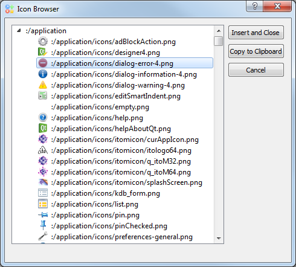

Editor¶

In the editor python scripts and methods can be written and executed. It offers debug-functions, syntax-highlighting and auto-completion.
For debugging see ../script-language/debugging
Icon-Browser¶
To help adding buttons and menu entries with icons a browser for internal icon-files is implemented.
By ‘doubleClicking’ a certain icon, the brower is automatically closed and the path of the selected icon is copied to the clipboard. The icon browser can be found unter ‘Edit’ or open with the shortcut ‘Ctrl+b’.